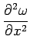

Inhalt Index DeskTop Bronstein

 Differentialrechnung Differentiation von Funktionen von mehreren Veränderlichen Substitution von Variablen in Differentialausdrücken und Koordinatentransformationen
Differentialrechnung Differentiation von Funktionen von mehreren Veränderlichen Substitution von Variablen in Differentialausdrücken und Koordinatentransformationen


Gegeben sei eine Funktion sowie ein funktionaler Zusammenhang, der die unabhängigen Variablen, die Funktion und deren partielle Ableitungen enthält:
| (6.65a) |
| (6.65b) |
Wenn x und y durch neue Variable u und  , gegeben durch
, gegeben durch
| (6.66a) |
substituiert werden, können die partiellen Ableitungen erster Ordnung aus dem Gleichungssystem
| (6.66b) |
mit den neuen Funktionen A, B, C und D von u und v berechnet werden zu
| (6.66c) |
Die partiellen Ableitungen zweiter Ordnung werden mit denselben Formeln berechnet, aber indem sie nicht auf sondern auf dessen partielle Ableitungen und angewendet werden, z.B.
|  | = | ||
| (6.67) |
| Beispiel | ||||||
|
Der LAPLACE-Operator soll in Polarkoordinaten ausgedrückt werden:
Gang der Rechnung:
|
Hinweis: Wenn Funktionen mit mehr als zwei Veränderlichen substituiert werden sollen, können ähnliche Substitutionsformeln hergeleitet werden.